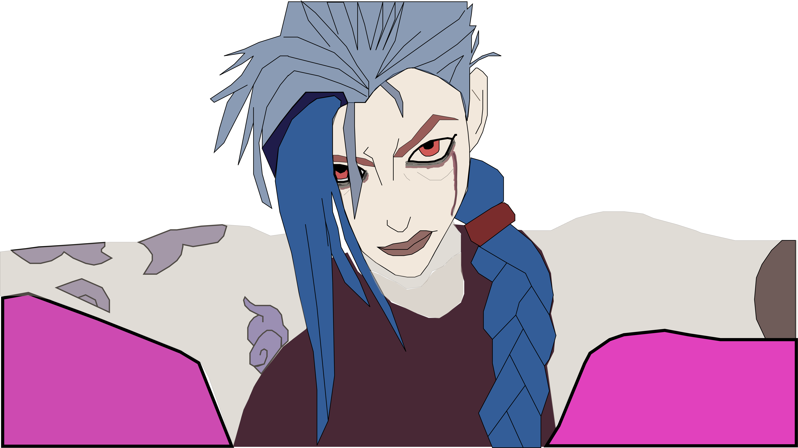

Jinx
Jinx from "Arcane" is an enigmatic and complex character. Her character arc goes from being an innocent kid that is innovative but makes a lot of mistakes, to a deeply hurt individual that is careless about hurting the people around her. Jinx's mental state is well-portrayed throughout the show and affects the way she sees the people close to her(like her sister and adopted father) and people in general.
